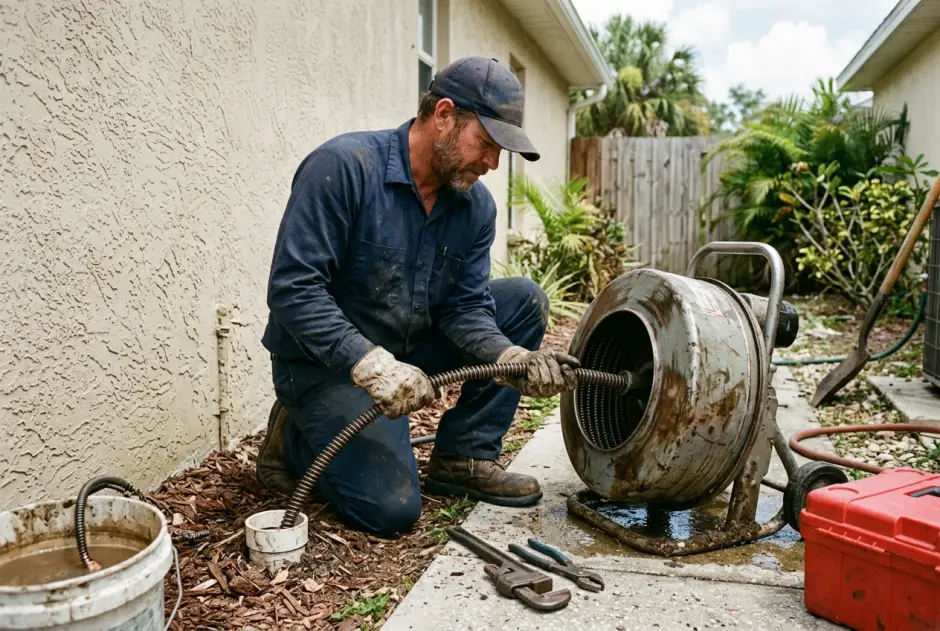
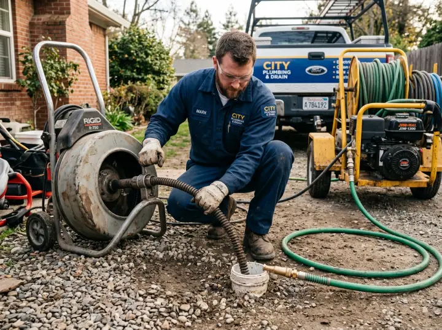

Drain Cleaning Cost in Naples, FL
Understanding what you should expect to pay for professional drain cleaning in Naples, Florida eliminates confusion and protects you from surprise add-on charges. Because true plumbing costs depend on whether a stoppage sits in a single fixture trap or deep within an underground sewer lateral, blind phone estimates are rarely reliable. Our approach is simple: we assess your plumbing lines, inspect cleanout access, diagnose the cause with a camera where necessary, and give you a firm flat quote before any work starts. To review our complete clearing capabilities, visit our central drain cleaning in Naples, FL home page.
Upfront flat quotesZero hidden dispatch feesYou
approve before work starts
Typical Naples Market Drain Cleaning Ranges
Approximate price benchmarks for common residential and commercial drainage services across Southwest Florida.
| Drain Service Job Type | Typical Naples Range | What Changes the Cost |
|---|---|---|
| Simple Sink or Tub Drain Snaking | approx. $100 – $200 | Trap accessibility, hair density, mechanical pop-up disassembly. |
| Toilet Drain Auger / Clearing | approx. $100 – $270 | Clearing through bowl trap versus unbolting toilet to access flange. |
| Laundry Standpipe Drain Cabling | approx. $150 – $215 | Compacted lint slurry density, line distance behind drywall. |
| Main Sewer Line via Ground Cleanout | approx. $180 | Readily accessible exterior cleanout cap in yard or flowerbed. |
| Main Line Clearing via Roof Vent | approx. $270 | Roof height, ladder rigging, distance down through vertical vent. |
| Main Line (Toilet Pull Required) | approx. $400 | Unbolting toilet, replacing wax seal ring, resetting and recaulking fixture. |
| General Florida Drain Clearing Benchmark | approx. $190 – $500+ | Standard published state averages across residential plumbing guides. |
| Hydro Jetting (Residential Lateral) | approx. $264 – $380 | Scouring heavy sand, scale, and dense roots in 4-inch lines. |
| Heavy or Commercial Hydro Jetting | up to approx. $651 | Restaurant grease traps, multi-unit HOA stacks, extended runs. |
Mandatory Pricing Disclaimer: Estimates reflect typical Naples, FL market ranges for standard residential access. Final price confirmed on-site before work begins. We do not charge hidden trip fees. For our full transparent price breakdown across Southwest Florida, visit our dedicated Naples drain cleaning cost guide.
What Drives Drain Cleaning Costs in Naples?
Four key physical factors determine your exact service estimate.
Location & Distance to Blockage
An isolated blockage in a bathroom p-trap takes significantly less time and equipment than a heavy root dam located 70 feet down an underground sewer lateral near the street.
Obstruction Material & Density
Soft hair and soap scum easily catch on a mechanical cable auger. Dense ficus or palm roots, hardened cooking grease, and packed beach sand require high-pressure water jetting.
Cleanout Pipe Accessibility
When an accessible ground cleanout is installed in your yard, equipment attaches immediately. If technicians must pull a toilet or rig equipment on a roof vent, labor increases.
Underground Pipe Condition
Modern PVC pipes handle high-torque cables smoothly. Fragile, corroded vintage cast iron pipes in older historic cottages require gentle handling and optical camera scoping.
Snaking vs. Hydro Jetting: Cost vs. Value
Choosing the right clearing method depends on whether you are fixing an isolated fixture clog or restoring long-term lateral flow.
Mechanical drain snaking is the most cost-effective solution for single-fixture clogs. A motorized cable with an expanding blade punches through hair clogs in showers and breaks up toilet obstructions efficiently.
However, when dealing with recurring mainline backups, grease buildup, or root intrusion, a snake only bores a small pilot hole through the blockage, leaving thick buildup behind on pipe walls. Hydro jetting in Naples utilizes high-pressure water streams up to 4,000 PSI to scour the entire interior pipe circumference clean. While jetting costs slightly more upfront, it eliminates repeat service calls and restores full line capacity.

Camera Diagnosis First: We look inside the pipe to
determine whether a standard cable will solve your issue or if hydro jetting is necessary.

What is the average cost to clean a drain in Naples, Florida?
General drain clearing in the Naples market typically ranges between approx. $190 and $500+. Simple sink, tub, or toilet snaking typically costs between $100 and $270, while clearing main sewer laterals via cleanouts typically runs between $180 and $400.
Why do drain cleaning prices vary between homes in Naples?
Pricing varies based on which pipe is blocked, the distance to the obstruction, whether cleanout access exists or a toilet must be pulled, and the nature of the blockage—such as soft hair and soap scum versus thick ficus roots or calcified mineral scale.
How much does hydro jetting cost compared to snaking in Naples?
Mechanical drain snaking typically ranges from approx. $100 to $270 for fixtures. High-pressure hydro jetting for main sewer lines averages between approx. $264 and $380 in Naples, reaching up to approx. $651 for heavy commercial grease or extensive multi-directional lateral runs.
Do you provide a firm price before starting drain work in Naples?
Yes. We inspect the cleanout or fixture first, verify the cause, and provide a clear, upfront flat-rate price. You approve the quote before any cable or jetting hose enters the pipe, eliminating unexpected surprise fees.
Get a Clear, Upfront Price on Your Drain Issue
Tell us your street in Naples and describe your drain symptoms. Our dispatch coordinator will provide straightforward pricing guidance before our technician arrives.
Contact Naples Drain Pros Dispatch
Speak with our local team for honest drain cleaning quotes and transparent service options.